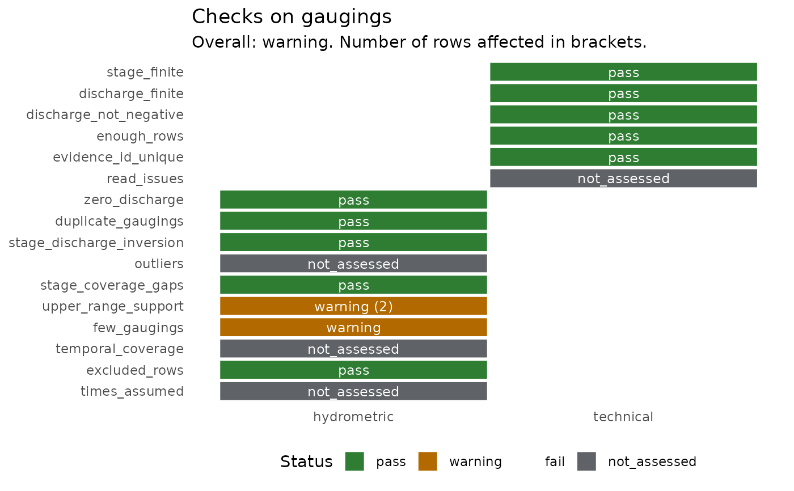

What validate_gaugings() returns, and what assess_rating() will. It
holds one row per check, and does not know what was checked: the same
class serves evidence now and a fitted rating later.
Each check has a domain (what it is about) and a severity (what a non-pass raises), and the class holds it to its severity.
technical checks can
pass,failor benot_assessed. A failure means the data cannot be used as it stands.hydrometric checks can
pass, raise awarningor benot_assessed. A warning is a judgement for a person to make. No check ever removes or changes a row.
A check that could not run (the information it needs is absent) is
not_assessed, never pass.
The check table has these columns:
| column | meaning |
check_id | a stable short name, unique within the assessment |
domain | technical or hydrometric (the checks on gaugings and equations), or data, numerical, statistical, hydraulic, operational or provenance (the six domains of assess_rating()) |
severity | what a non-pass raises: error (the check can fail) or warning (it can only warn). Fixed for technical and hydrometric checks |
status | pass, warning, fail or not_assessed |
message | what was found, in a sentence |
affected_evidence | list column; the evidence_ids concerned, empty when none |
affected_stage_min_m, affected_stage_max_m | the stage range concerned, NA when none |
recommendation | what to look at next |
Read it with assessment_checks() and summarise it with
assessment_status(). print() lists what did not pass, and plot()
draws every check by status.
Examples
gaugings <- data.frame(
stage_m = c(0.5, 0.9, 1.4, 2.0, 2.6, 3.1),
discharge_cms = c(1.1, 3.0, 7.6, 16, 27, 40)
)
assessment <- validate_gaugings(gaugings)
assessment
#> <FlodeAssessment> gaugings, 6 row(s) assessed. Overall: warning
#> 10 pass, 2 warning, 0 fail, 4 not assessed
#> [warning] upper_range_support: Only 2 gaugings in the top 20% of the stage range (at least 3 wanted).
#> [warning] few_gaugings: 6 usable gaugings, fewer than the 10 wanted.
#> [not_assessed] read_issues: The table has no read_issue column, so reading problems could not be checked.
#> [not_assessed] outliers: Fewer than 8 gaugings with a positive discharge: too few to judge.
#> [not_assessed] temporal_coverage: No gauging has a date, so recency could not be judged.
#> [not_assessed] times_assumed: The table has no read_issue column, so assumed times could not be checked.
plot(assessment)
